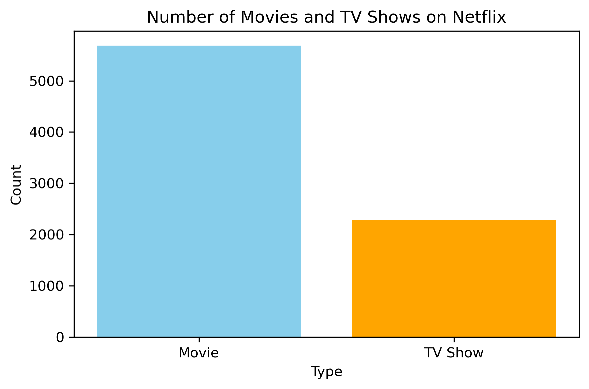
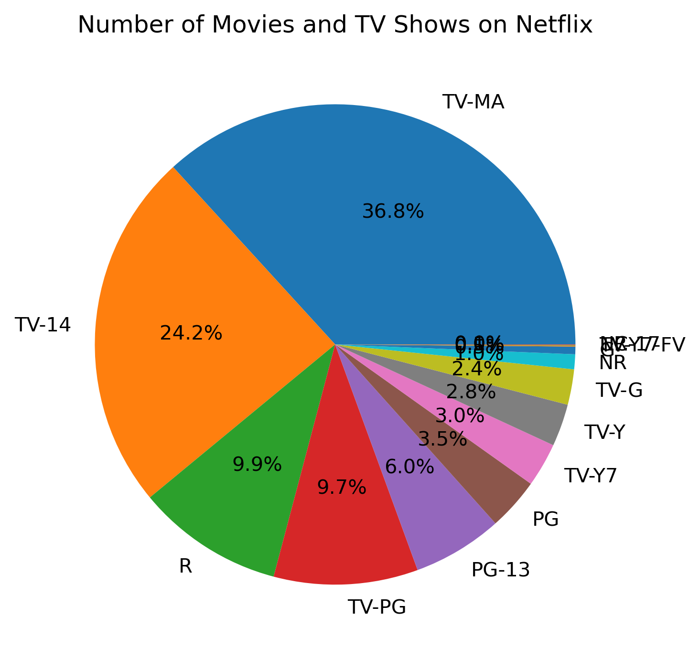
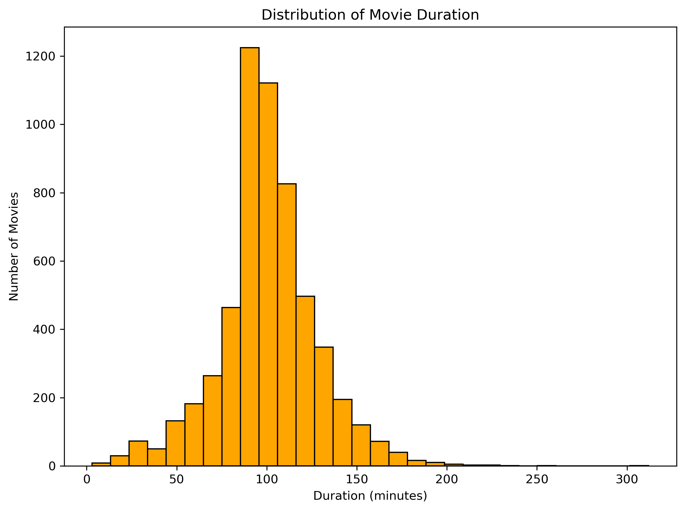
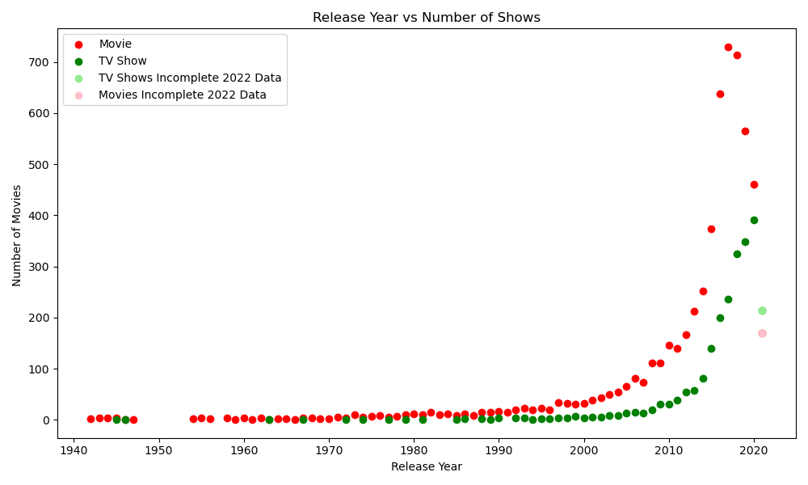
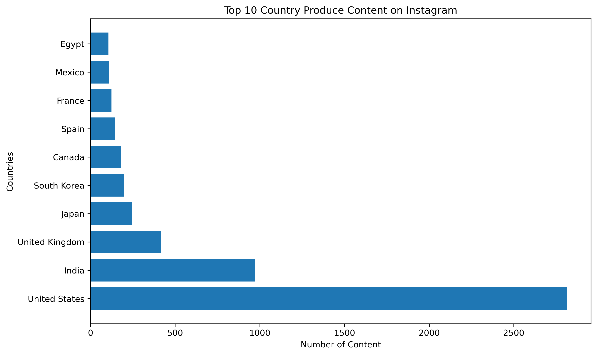
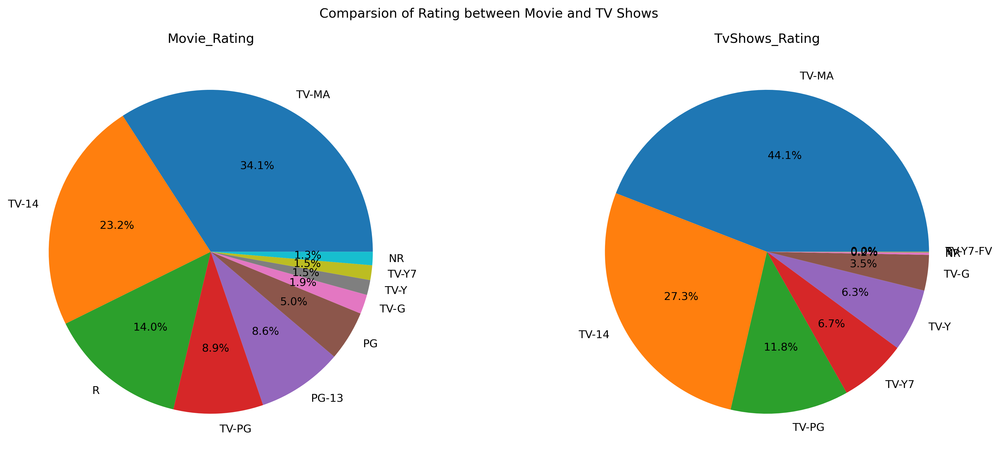

Data Analysis
Exploring trends in movies and shows on Netflix
Exploring trends in movies and shows on Netflix
This project analyzes the Netflix dataset (titles, directors, ratings, duration, etc.) as a small-scale exercise to strengthen my skills in data visualization using Python. Using pandas for data manipulation and matplotlib for charting, I explored aspects such as content distribution, ratings, release trends, and country-wise production. This project focuses on transforming raw data into meaningful and visually clear representations.
The bar chart shows that Netflix hosts significantly more movies than TV shows. While TV shows form a substantial portion of the catalog, movies clearly dominate the library.

The pie chart illustrates the distribution of Netflix content across different ratings. Categories like TV-MA and TV-14 represent the largest shares, showing Netflix’s focus on mature and teen audiences.

Most movies are between 90 and 120 minutes long, with the peak around 100 minutes. This shows the industry’s standard length of ~1.5 hours, with outliers below 30 min or above 180 min being rare.

The scatter plot shows Netflix’s release trend. Both movies and TV shows rise significantly after 2015. TV shows show rapid growth recently, though 2022 appears incomplete due to partial data.

The U.S. dominates Netflix content, followed by India and the UK. This shows Netflix’s heavy reliance on Hollywood productions but also significant contributions from international markets.

Movies on Netflix are spread across TV-MA, TV-14, and R, showing a balance for varied audiences. TV shows, however, are concentrated in mature categories (TV-MA, TV-14), targeting older audiences.

Netflix’s catalog is dominated by movies, typically 90–120 minutes long. The U.S. leads content production, followed by India and the UK. After 2015, releases grew sharply, especially TV shows. Movies are evenly distributed across ratings, while TV shows focus on mature audiences. This highlights Netflix’s dual strategy of mass variety with a strong push for mature content.
You can view the full notebook here.